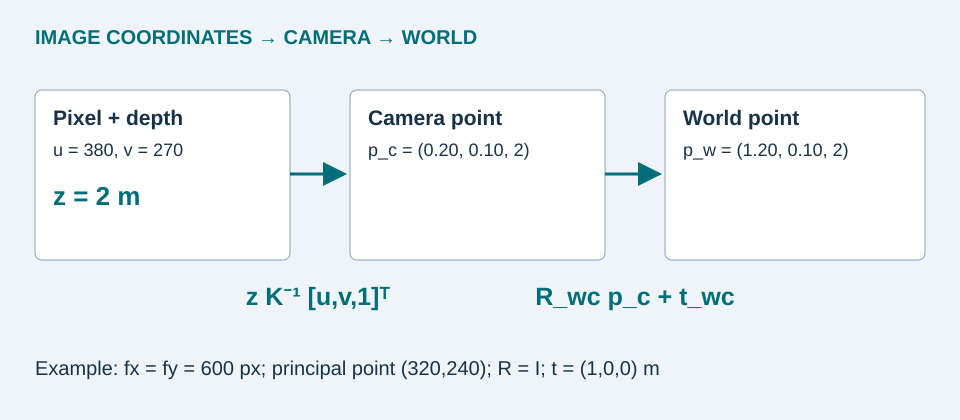
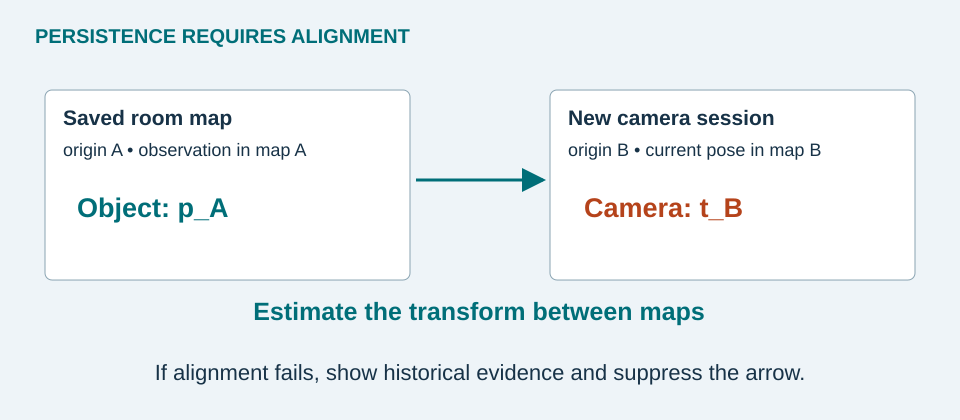

What SLAM estimates
Simultaneous localization and mapping jointly estimates camera motion and scene structure. A feature-based pipeline detects repeatable points, matches them across frames, estimates pose, triangulates landmarks, and refines poses and points by minimizing reprojection error. Loop closure uses a recognized place to correct accumulated drift. Moving objects should not become stable background landmarks.
ORB-SLAM3 supports visual and visual-inertial configurations with multiple camera types and multiple maps. [4] It is a useful reference architecture, not a drop-in guarantee of persistent phone tracking. A sparse map of landmarks supports pose estimation; a dense surface map provides more geometry but costs additional computation and storage.


A worked geometric example
Assume an undistorted pixel (u,v), focal lengths fx, fy, principal point (cx,cy), and depth z measured along the camera optical axis. In this teaching camera convention, x points right, y down, and z forward.
pw = Rwcpc + twc
Let fx = fy = 600 px, (cx,cy) = (320,240), (u,v) = (380,270), and z = 2 m. Then p_c = (0.20, 0.10, 2.00) m. If rotation is identity and the camera is at (1,0,0) m in this example world, the object point is (1.20,0.10,2.00) m. A library that supplies world-to-camera pose needs an inverse before using this equation.
Use a robust statistic over valid depth pixels inside an object mask. A box center may land on background or a transparent lens. The recovered point is usually an observed surface point, not the object's physical center. Across views, reject outliers before fusing estimates. EgoLoc studies the value of robust camera poses and confidence-weighted multiview aggregation for VQ3D. [5]
Choosing sensors
| Configuration | What it provides | Main constraint |
|---|---|---|
| Single RGB camera | Images, bearings, relative structure | Pure monocular geometry has unknown metric scale; texture and parallax matter. |
| RGB + IMU | Visual-inertial pose; scale can become observable | Requires calibration, time alignment, and sufficiently informative motion. |
| RGB + depth / LiDAR | Aligned depth and easier metric projection | Availability, range, reflective surfaces, and small-object resolution vary. |
The coordinate system must survive reopening
Save a map identifier and anchors with every observation. A new session can choose a new origin, so yesterday's coordinates cannot be used until the new session aligns with the saved map. Apple's world-map example saves mapping data and attempts relocalization when restoring a session. Revisiting previously scanned areas can help. [6]


Convert the world displacement back to the current camera frame using d_c = R_wcᵀ(p_w − t_wc). In our convention, horizontal bearing is atan2(d_c.x, d_c.z). If alignment is uncertain, show the last-seen image and room label. Suppress an apparently precise arrow. Position uncertainty also grows with depth error, calibration error, and pose error.
Pause & explain: What happens if depth is 20% too large while pose is fixed?
The back-projected camera-space point is 20% farther along the same ray. A correct image detection can therefore still produce incorrect metric guidance.